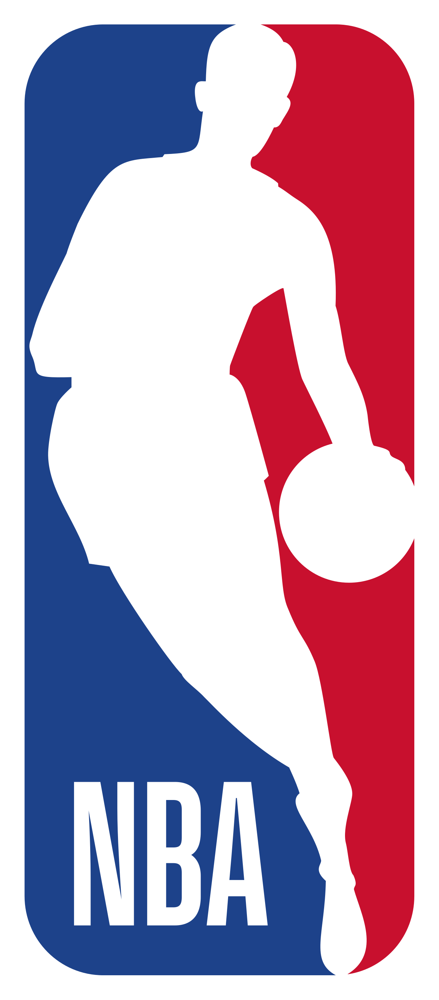
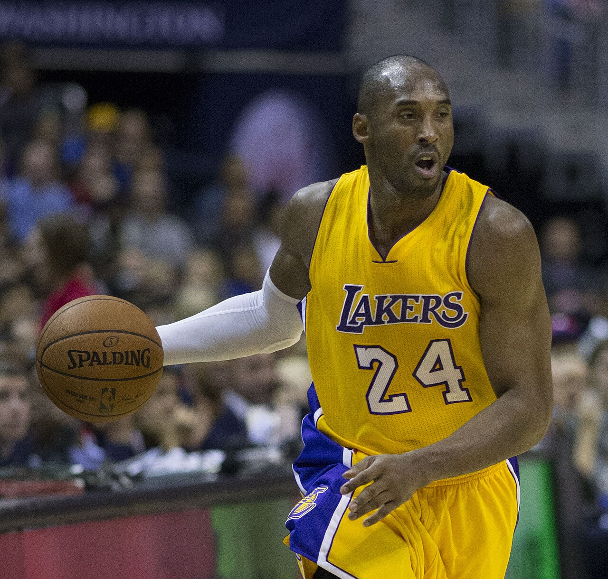

"Black Mamba" | "KB24"
Nascimento: 23 de agosto de 1978, Filadélfia (EUA)
Posição: Ala-armador
Time: Los Angeles Lakers (1996-2016)
Altura: 1,98 m
Kobe Bean Bryant nasceu na Filadélfia e passou parte da infância na Itália, onde o pai, Joe "Jellybean" Bryant, jogava profissionalmente. Foi lá que aprendeu a amar o basquete e desenvolveu a técnica refinada que marcaria sua carreira. Em 1996, foi escolhido na 13ª posição do Draft pelo Charlotte Hornets e imediatamente trocado para o Los Angeles Lakers, time que defendeu por 20 temporadas.
Ao lado de Shaquille O'Neal, conquistou o tricampeonato da NBA (2000, 2001 e 2002). Depois da saída do companheiro, assumiu o protagonismo e levou os Lakers a mais dois títulos (2009 e 2010), sendo eleito MVP das Finais nas duas ocasiões. Em 22 de janeiro de 2006, marcou 81 pontos contra o Toronto Raptors, a segunda maior pontuação em um único jogo na história da liga. Em 13 de abril de 2016, encerrou a carreira com 60 pontos na vitória sobre o Utah Jazz.
Kobe faleceu em 26 de janeiro de 2020, em um acidente de helicóptero na Califórnia, ao lado da filha Gianna. Sua memória, porém, permanece viva na cultura do basquete e na filosofia da "Mamba Mentality".
"A coisa mais importante é tentar inspirar as pessoas para que elas possam ser grandes em tudo o que quiserem fazer."
A Mamba Mentality ensina dedicação obsessiva, disciplina diária e a busca constante pela excelência, sem atalhos.